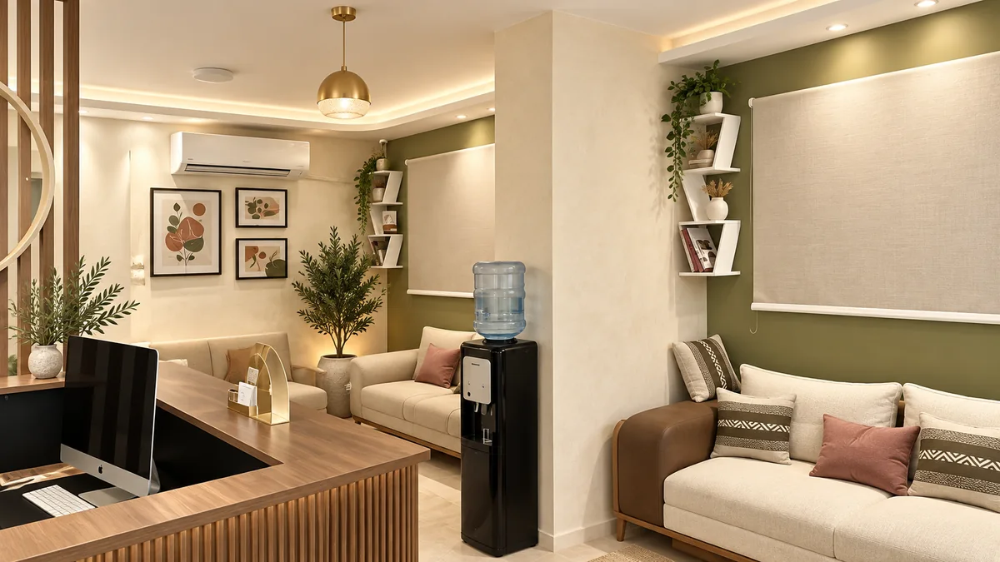
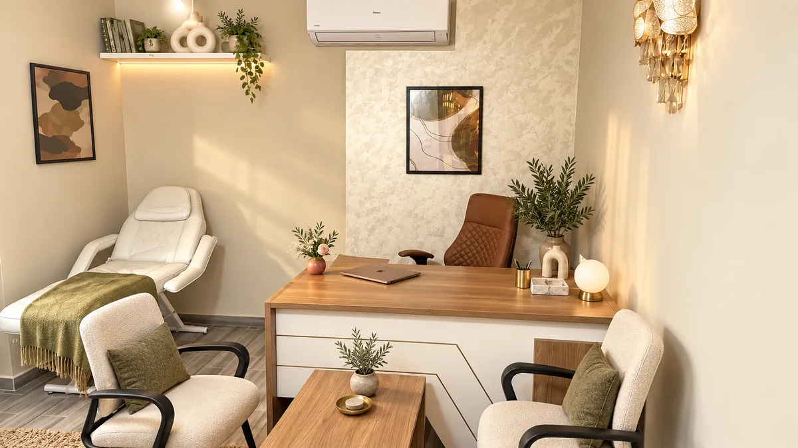
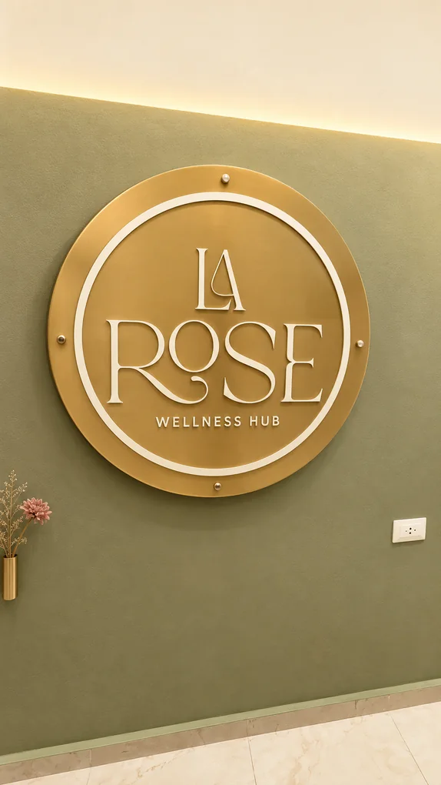
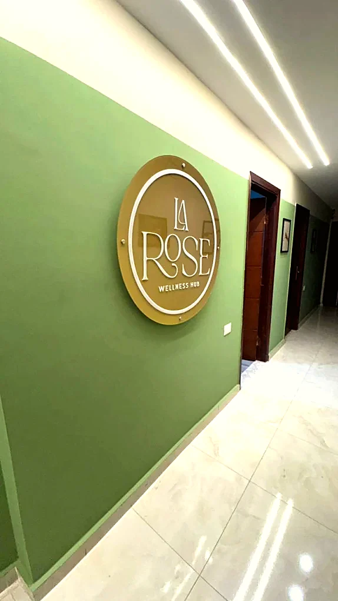

المعادي الجديدة
فرع المعادي
فرع المعادي هو أول فروع لاروز، وبيجمع كل التخصصات تحت سقف واحد. العيادة في المعادي الجديدة، خلف بنك QNB مباشرةً، ومتاح فيها الكشف والسونار وتحليل التركيب الجسمي بجهاز InBody وجلسات نحت الجسم في نفس المكان.
معلومات الزيارة
العنوان
١٤ شارع المختار، متفرع من شارع النصر، خلف بنك QNB، المعادي الجديدة، القاهرة
أقرب علامة
خلف بنك QNB مباشرةً
التليفون
010 4066 1893
المواعيد
السبت · الاتنين · الثلاثاء، من ٣ لـ ٧:٣٠ مساءً
من جوه الفرع




قبل ما توصل
إزاي توصل للفرع
- أقرب علامة مميزة: بنك QNB، العيادة خلفه مباشرةً في شارع المختار.
- من شارع النصر: ادخل شارع المختار، والعيادة على يمينك.
- متاح انتظار في الشارع أمام المبنى.
تحت سقف واحد
التخصصات المتاحة في الفرع
الأقسام بتتشاور مع بعض لما حالتك تحتاج أكتر من زاوية.


 قريباً
قريباً
 قريباً
قريباً
 قريباً
قريباً
 قريباً
قريباً
ابدأ بكشف حقيقي واحجز دلوقتي
الحجز قبل الحضور ضروري، والدخول بأسبقية الحضور.